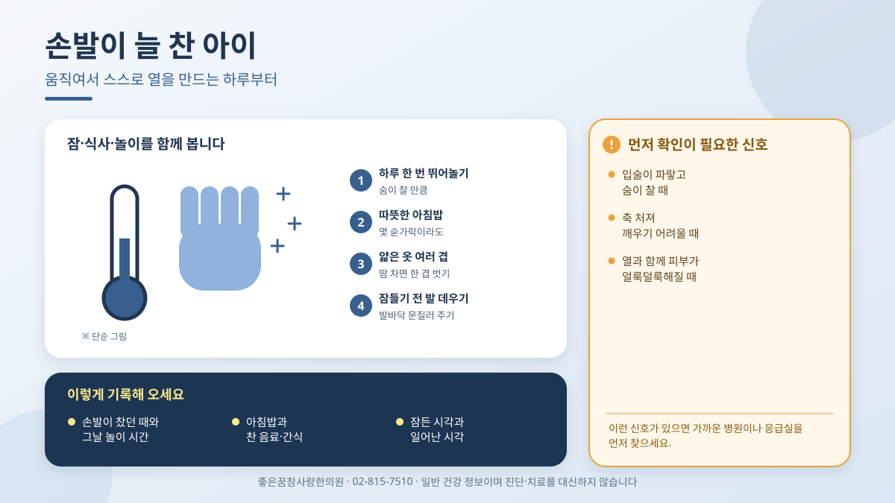

이종호 한의사 감수좋은꿈참사랑한의원 대표원장 (한의사 면허번호 19769)발행 2026-11-26 · 수정 2026-11-26
이 글의 차례
등원길에 아이 손을 잡았는데 얼음처럼 차갑습니다. 장갑을 끼워 보내도 돌아올 때면 손끝이 빨갛고, 잠자리에 들 때 발을 만져 보면 여전히 서늘합니다. 그런데 아이는 정작 춥다는 말도 없이 잘 뛰어놉니다. 부모는 '혹시 몸이 약한 건 아닐까' 하는 마음에 이것저것 찾아보게 됩니다.
진료실에서 "우리 아이는 손발이 늘 차요"라는 말을 자주 듣습니다. 감기나 배앓이 때문에 왔다가 진료 끝에 덧붙이시는 경우도 많습니다. 아이 손을 잡아 보면 정말 서늘한 경우도 있고, 부모님 손이 따뜻해서 상대적으로 차게 느껴지는 경우도 있습니다.
손발이 찬 것만으로 큰 병을 걱정하실 필요는 대부분 없습니다. 하지만 아이가 어떻게 먹고, 자고, 움직이는지를 함께 보면 손발의 온도가 그 아이의 생활을 조금은 비춰 주기도 합니다. 이 글에서는 그 부분을 차근차근 정리해 보겠습니다.
아이 손발이 차다는 것은 어떤 상태인가요
사람의 몸은 추울 때 열을 지키기 위해 손발 쪽 혈관을 좁혀 피를 몸 가운데로 모읍니다. 그래서 손발은 몸에서 가장 먼저 차가워지는 곳입니다. 손발이 찬 것은 몸이 열을 지키는 자연스러운 반응이기도 합니다.
아이는 어른보다 몸에 비해 겉면적이 넓어 열을 빨리 잃고, 체온을 조절하는 힘도 아직 자라는 중입니다. 그래서 같은 방에 있어도 아이 손발이 더 차게 느껴질 수 있습니다. 특히 마른 편이거나 근육이 적은 아이는 몸에서 만들어 내는 열이 적어 손발이 서늘한 경우가 많습니다.
중요한 것은 손발만 찬지, 몸 전체가 차고 기운도 없는지입니다. 손발은 차도 배와 등이 따뜻하고, 잘 먹고 잘 놀고 잘 자라고 있다면 체질적인 경향일 가능성이 큽니다. 몸 전체가 늘 서늘하고 쉽게 지친다면 조금 더 살펴볼 필요가 있습니다.
왜 어떤 아이는 손발이 유난히 찰까요
첫째, 움직임이 적은 생활입니다. 요즘 아이들은 실내에서 앉아 보내는 시간이 깁니다. 근육을 쓰면 열이 만들어지는데, 오래 앉아 있으면 그만큼 열이 덜 만들어지고 다리 쪽 혈액 순환도 느려집니다. 영상을 오래 본 뒤 발이 차가워지는 것도 이 때문입니다.
둘째, 식사와 관련이 있습니다. 끼니를 거르거나 양이 적으면 몸이 쓸 연료가 부족해 열을 아끼려 합니다. 찬 음료와 아이스크림을 자주 먹는 아이는 배가 차고 손발까지 서늘해지기도 합니다. 편식이 심해 단백질이나 철분이 부족한 경우도 함께 생각해 볼 수 있습니다.
셋째, 긴장과 예민함입니다. 낯선 곳에 가거나 발표를 앞두고 긴장하면 손바닥에 땀이 나면서 손이 차가워지는 아이가 있습니다. 마음이 긴장하면 몸도 손발 쪽 혈관을 좁히기 때문입니다. 예민한 아이일수록 이런 반응이 잦을 수 있습니다.
넷째, 잠입니다. 늦게 자고 아침에 쫓기듯 일어나면 몸이 깨어날 준비가 덜 된 상태로 하루를 시작합니다. 이런 아이는 오전 내내 손발이 차고 얼굴빛이 창백한 경우가 있습니다.
한의학에서는 손발이 찬 아이를 기운이 아직 손끝까지 충분히 닿지 않는다거나, 속이 찬 편이라고 설명해 왔습니다. 이것은 아이의 체질 경향을 관찰하는 오래된 표현이고 병명은 아닙니다. 진찰에서는 이런 관찰을 식사, 잠, 활동량과 함께 참고합니다.
다른 이유는 없는지도 함께 봅니다
드물지만 손발이 찬 것이 다른 상태와 함께 오는 경우도 있습니다. 빈혈이 있으면 얼굴과 손톱이 창백하고 쉽게 지칩니다. 갑상선 기능이 떨어지면 추위를 많이 타고, 변비가 생기며, 키가 잘 자라지 않을 수 있습니다.
손가락 끝이 추위나 긴장에 하얗게 질렸다가 파랗게, 다시 빨갛게 변하며 아파하는 모습이 반복된다면 레이노 현상을 생각해 볼 수 있습니다. 이런 변화가 보이면 사진을 찍어 두고 소아청소년과에서 확인받으세요.
손발이 찬 것과 저린 것은 다릅니다. 아이가 손발이 찌릿하다거나 감각이 둔하다고 말한다면, 차가움과 별개로 소아청소년과 진료를 먼저 받아 보시는 것이 좋습니다.
먼저 이렇게 여쭙니다
아이의 손발이 차다고 하시면 저는 아래와 같은 질문을 차례로 드립니다. 부모님이 미리 떠올려 오시면 진료가 훨씬 수월합니다.
- 손발이 차기 시작한 지 얼마나 되었고, 계절과 상관없나요?
- 아이가 춥다고 말하거나, 추위를 유난히 타나요?
- 아침밥은 먹고, 끼니 양은 어떤가요? 찬 음료나 간식을 자주 먹나요?
- 하루에 밖에서 뛰어노는 시간은 얼마나 되나요?
- 잠드는 시각과 일어나는 시각은 언제인가요?
- 쉽게 지치거나 얼굴이 창백하다는 말을 들은 적이 있나요?
- 변비나 잦은 배앓이가 있나요?
키와 몸무게가 또래와 비교해 어떻게 자라고 있는지도 함께 봅니다. 영유아 검진이나 학교 건강검진 기록이 있으면 가져와 주세요. 필요하다고 판단되면 인바디로 체성분을 살펴보기도 합니다.
일상에서 먼저 해 볼 수 있는 것
손발이 찬 아이에게 가장 먼저 권하는 것은 몸을 움직여 스스로 열을 만드는 시간입니다. 두꺼운 양말보다 하루 한 번 숨이 차게 뛰어노는 시간이 손발을 데우는 데 더 오래가는 힘이 될 수 있습니다.
- 하루 한 번은 밖에서 숨이 찰 만큼 뛰어놀기
- 아침밥은 따뜻한 국이나 죽처럼 속을 데우는 음식으로 조금이라도 먹기
- 찬 음료와 아이스크림은 횟수를 정해 두기
- 옷은 두꺼운 한 벌보다 얇은 옷을 여러 겹 입히기
- 목과 발목, 배를 따뜻하게 덮어 주기
- 잠들기 전 미지근한 물에 발을 담그거나 발바닥을 문질러 주기
옷을 입힐 때는 너무 덥게 입히지 않는 것도 중요합니다. 겹겹이 입고 뛰어놀다 땀을 흘리면, 땀이 식으면서 오히려 몸이 더 차가워집니다. 목덜미에 손을 넣어 보아 땀이 배어 있으면 한 겹을 벗겨 주세요.
집 안에서는 실내화나 양말을 신기는 것이 좋습니다. 바닥이 차가운 집이라면 아이가 자주 앉는 자리에 얇은 매트를 깔아 주는 것도 방법입니다. 발이 따뜻하면 몸 전체가 편안하게 느껴지기 쉽습니다.
손발을 데우는 놀이를 만들어 보세요
아이에게 "운동해"라고 하면 잘 듣지 않지만, 놀이로 바꾸면 쉽게 따라옵니다. 저녁 먹고 나서 거실에서 할 수 있는 작은 놀이 몇 가지를 정해 두시면 좋습니다.
- 제자리에서 손뼉 치며 열 번 뛰기
- 손바닥을 마주 비벼 뜨겁게 만든 뒤 볼에 대 보기
- 발가락으로 수건 집어 옮기기
- 엄마 아빠와 손 잡고 쪼그려 앉았다 일어서기
이런 놀이를 몇 분만 해도 아이 손발이 금세 따뜻해지는 것을 함께 느낄 수 있습니다. 아이도 '움직이면 손이 따뜻해지는구나' 하고 몸으로 배우게 됩니다.
계절에 따라 챙길 것이 다릅니다
겨울에는 바깥 찬 공기와 실내 난방 사이를 오가며 손발이 쉽게 식습니다. 외출 때는 장갑과 목도리, 두꺼운 양말을 챙기되, 실내에 들어오면 겉옷과 장갑을 바로 벗겨 땀이 차지 않게 해 주세요. 젖은 장갑과 양말은 금세 열을 빼앗으니 여벌을 하나 가방에 넣어 두면 좋습니다.
여름이라고 손발 걱정이 없는 것은 아닙니다. 에어컨 바람이 바로 닿는 자리에 오래 앉아 있거나, 찬 음료를 하루 종일 달고 사는 아이는 한여름에도 배와 손발이 서늘합니다. 냉방이 센 곳에서는 얇은 겉옷을 걸치고, 찬 음료 대신 미지근한 물을 자주 마시게 해 주세요.
환절기에는 아침저녁 기온 차가 커서 아침에 입힌 옷이 낮에는 덥고 저녁에는 춥습니다. 벗고 입기 쉬운 얇은 겉옷 하나를 챙겨 주면 아이 스스로 온도에 맞춰 조절하는 습관을 들이기에도 좋습니다.
어린이집과 학교에서는 이렇게 도와주세요
아이가 하루의 많은 시간을 보내는 곳은 집이 아니라 어린이집이나 학교입니다. 손발이 유난히 찬 아이라면 선생님께 한 번 말씀드려 두시는 것도 좋습니다. 창가나 에어컨 아래처럼 바람이 닿는 자리를 피해 주시기만 해도 아이가 한결 편하게 지낼 수 있습니다.
쉬는 시간에 교실 안에만 있지 않고 잠깐이라도 복도나 운동장을 걷도록 이야기해 주세요. 학원 사이를 이동할 때 한두 정거장을 걸어가는 것도 하루 활동량을 늘리는 작은 방법입니다.
점심이나 간식으로 차가운 것만 먹지 않도록 따뜻한 물이나 보리차를 보온병에 담아 보내는 집도 많습니다. 아이가 좋아하는 컵이나 보온병을 함께 고르면 스스로 챙겨 마시는 재미가 생깁니다.
부모님이 자주 헷갈리시는 것
손발이 차니 일단 두껍게 껴입혀야 한다고 생각하시는 분이 많습니다. 하지만 덥게 입혀 땀이 나면 오히려 식으면서 더 차가워지고, 몸을 움직이기도 불편해집니다. 아이가 편하게 뛰어놀 수 있을 만큼 입히는 것이 손발을 데우는 데는 더 도움이 될 때가 많습니다.
또 하나는 손발이 차면 무언가 보충해 줘야 한다는 생각입니다. 영양제나 건강식품을 여러 가지 챙기기 전에, 아침밥과 바깥 놀이, 잠 시각처럼 기본이 갖춰져 있는지부터 보시길 권합니다. 그 위에 필요한 것이 있는지는 진찰 뒤에 함께 정해도 늦지 않습니다. 아이에게 꼭 맞는 방법은 아이를 직접 보고 생활을 들은 뒤에야 보이기 때문입니다.
잠자리 온도도 살펴 주세요
손발이 차서 잠들기 어려워하는 아이는 이불 속에서 한참을 뒤척입니다. 잠들기 삼십 분쯤 전에 방을 미리 데워 두고, 이불 발치에 얇은 담요를 한 겹 더 깔아 주면 발이 덜 시립니다. 전기장판을 쓴다면 아이가 잠든 뒤에는 꺼 두는 편이 좋습니다.
자기 전에 부모가 아이 발바닥을 손바닥으로 감싸 쥐고 천천히 문질러 주는 시간은 손발을 데우는 것뿐 아니라 마음을 가라앉히는 데도 도움이 됩니다. 하루를 정리하는 짧은 대화를 함께 나누면 아이에게는 기다려지는 잠자리 순서가 되기도 합니다.
한의원에서 함께 살필 수 있는 경우
- 손발이 차면서 입이 짧고 쉽게 배가 아픈 아이
- 손발이 차고 쉽게 지치며 자주 감기에 걸리는 아이
- 긴장하면 손이 차고 땀이 나며 잠들기 어려워하는 아이
- 소아청소년과 검사에서 큰 이상은 없다고 들었지만 생활 관리를 함께 정리하고 싶은 경우
좋은꿈참사랑한의원에서는 아이를 진찰한 뒤 식사, 잠, 활동 가운데 먼저 바꿔 볼 것 하나를 함께 정합니다. 맥과 배를 살피고, 아이 상태에 따라 따뜻한 손으로 하는 배 마사지 방법이나 혈자리 누르기를 부모님께 알려 드리기도 합니다.
아이에게 침이나 한약이 필요할지는 진찰 뒤 아이의 나이와 상태를 보고 판단합니다. 한약을 상의할 때는 아이가 먹고 있는 약과 영양제를 모두 확인하고 신중히 정합니다. 침은 아이가 무서워하지 않도록 충분히 설명하고, 원하지 않으면 다른 방법을 찾습니다. 소아청소년과에서 받은 약이 있다면 임의로 끊지 않습니다.
이렇게 기록해 오시면 상담이 쉬워집니다
손발이 찬 것은 하루 중에도, 날씨에 따라서도 달라집니다. 일주일 정도 간단히 적어 오시면 아이의 흐름이 훨씬 잘 보입니다.
- 아침, 오후, 잠들기 전 손발이 찼던 때
- 그날 밖에서 뛰어논 시간
- 아침밥을 먹었는지, 찬 음료나 간식을 먹었는지
- 잠든 시각과 일어난 시각
- 피곤해하거나 배가 아프다고 한 때
- 손가락 색이 하얗거나 파랗게 변한 적이 있다면 그 사진
기록이 쌓이면 '많이 뛰어논 날은 저녁에 손이 따뜻했구나', '아침을 거른 날은 오전 내내 손이 찼구나' 같은 연결이 보입니다. 부모님이 미처 몰랐던 아이의 하루 모습이 기록 속에서 드러나기도 합니다. 그 연결이 다음에 무엇을 바꿀지 알려 주는 실마리가 됩니다.
따뜻한 손은 생활에서 만들어집니다
손발이 찬 아이를 보면 부모는 뭔가 특별한 것을 해 주고 싶어집니다. 그런데 아이의 손발을 데우는 힘은 대부분 평범한 생활 안에 있습니다. 잘 먹고, 잘 자고, 잘 뛰어노는 하루가 쌓이면서 아이 몸도 열을 만들고 지키는 법을 익혀 갑니다.
이번 주에는 저녁 먹고 오 분 놀이 하나만 정해 보세요. 그리고 아이 손을 잡을 때 차갑다고 걱정하기보다 "같이 손 비벼 볼까?" 하고 웃으며 데워 주시면 좋겠습니다. 그 따뜻한 손길이 아이에게는 가장 편안한 기억으로 남습니다.
이런 증상은 먼저 확인이 필요합니다
- 손발이 차면서 입술이 파랗고, 숨이 차거나 축 처져 깨우기 어려운 경우
- 열이 나면서 손발이 차고 피부가 얼룩덜룩해지거나, 손가락 끝이 하얗게 질려 심하게 아파하는 경우
이런 신호가 있으면 한의원보다 가까운 병원이나 응급실을 먼저 찾으세요.
함께 읽으면 좋은 글
- 손발이 찬 수족냉증, 레이노·갑상선·빈혈과 어떻게 구분하나요?
- 손발이 차다고 하면 진료실에서 어떤 것을 함께 묻나요?
- 아이가 입이 짧고 편식이 심할 때는 어떻게 살피나요?
- 아이가 감기에 자주 걸리고 코가 막힐 때는 어떤 점을 살펴보나요?
- 밥 먹을 때나 잠들 때 땀을 유난히 많이 흘리는 아이는 무엇을 살피나요?

여쭙는 것
- 손발이 차기 시작한 지 얼마나 되었고, 계절과 상관없나요?
- 아이가 춥다고 말하거나, 추위를 유난히 타나요?
- 아침밥은 먹고, 끼니 양은 어떤가요? 찬 음료나 간식을 자주 먹나요?
생활에서 해 볼 것
- 하루 한 번은 밖에서 숨이 찰 만큼 뛰어놀기
- 아침밥은 따뜻한 국이나 죽처럼 속을 데우는 음식으로 조금이라도 먹기
- 찬 음료와 아이스크림은 횟수를 정해 두기
한의원에서 함께 살필 것
- 손발이 차면서 입이 짧고 쉽게 배가 아픈 아이
- 손발이 차고 쉽게 지치며 자주 감기에 걸리는 아이
- 긴장하면 손이 차고 땀이 나며 잠들기 어려워하는 아이
먼저 확인이 필요한 신호
- 손발이 차면서 입술이 파랗고, 숨이 차거나 축 처져 깨우기 어려운 경우
- 열이 나면서 손발이 차고 피부가 얼룩덜룩해지거나, 손가락 끝이 하얗게 질려 심하게…
한눈에 보는 표
| 구분 | 핵심 |
|---|---|
| 여쭙는 것 | 손발이 차기 시작한 지 얼마나 되었고, 계절과 상관없나요? 아이가 춥다고 말하거나, 추위를 유난히 타나요? |
| 생활에서 해 볼 것 | 하루 한 번은 밖에서 숨이 찰 만큼 뛰어놀기 아침밥은 따뜻한 국이나 죽처럼 속을 데우는 음식으로 조금이라도 먹기 |
| 한의원에서 함께 살필 것 | 손발이 차면서 입이 짧고 쉽게 배가 아픈 아이 손발이 차고 쉽게 지치며 자주 감기에 걸리는 아이 |
| 먼저 확인이 필요한 신호 | 손발이 차면서 입술이 파랗고, 숨이 차거나 축 처져 깨우기 어려운 경우 열이 나면서 손발이 차고 피부가 얼룩덜룩해지거나, 손가락 끝이 하얗게 질려 심하게 아파하는 경우 |
자주 묻는 질문
손발이 찬 아이는 몸이 약한 건가요?
손발만 차고 잘 먹고 잘 놀며 잘 자라고 있다면 체질적인 경향인 경우가 많습니다. 쉽게 지치거나 창백하고 체중이 잘 늘지 않는다면 소아청소년과에서 먼저 확인받으세요.
손발이 찬 아이에게 한약을 먹이면 따뜻해지나요?
한약으로 손발이 따뜻해진다고 약속드리기는 어렵습니다. 진찰 뒤 아이의 식사와 잠, 소화 상태를 보고 필요한지 판단하며, 먹고 있는 약을 확인한 뒤 신중히 정합니다.
양말을 신고 자게 해도 되나요?
발이 차서 잠들기 어려워한다면 얇고 조이지 않는 양말은 괜찮습니다. 자다가 땀이 나거나 답답해하면 벗겨 주세요.
손발이 차면 빈혈 검사를 해야 하나요?
손발이 찬 것만으로 검사가 꼭 필요한 것은 아닙니다. 얼굴이나 손톱이 창백하고 쉽게 지치는 모습이 함께 있으면 소아청소년과에서 검사가 필요한지 상의해 보세요.
찬 음식을 아예 못 먹게 해야 하나요?
아예 금지하기보다 횟수를 정해 두는 편이 아이도 받아들이기 쉽습니다. 찬 음식을 먹은 뒤 배가 아프거나 설사를 자주 한다면 그 내용을 기록해 와 주세요.
좋은꿈참사랑한의원은 재진 때 지난번 이야기부터 이어서 여쭙니다. 진료시간과 예약은 오시는 길에서 확인하세요.
어디서 상담받을 수 있나요?
좋은꿈참사랑한의원은 서울 동작구 만양로2길 2 신성빌딩 3층·5층(서울 동작구 상도동, 7호선 상도역 3번 출구 근처)에 있습니다. 한의사 3명(이종호 대표원장, 조영기 수석진료원장, 정원영 진료원장)이 진료합니다. 진료시간은 평일 09:30~20:00(점심 13:00~14:00), 토·일·공휴일 09:30~15:00이며, 방문 전 전화로 확인을 권합니다. 예약은 네이버 예약, 카카오톡 상담, 전화 02-815-7510로 받습니다.
이 글은 일반적인 건강 정보이며 개인의 진단이나 치료를 대신하지 않습니다. 증상이 있거나 복용 중인 약이 있다면 진료를 통해 확인하세요. 치료 효과는 개인마다 다를 수 있습니다.
작성 기준: 일반적으로 알려져 있는 건강 정보를 참고해 정리했습니다(대표원장 감수). 증상 기록은 1~2주 동안 하루 1회, 비슷한 시간에 적어 오시면 지난 상태와 비교하기 쉽습니다.